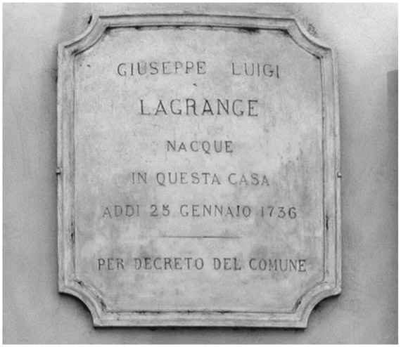
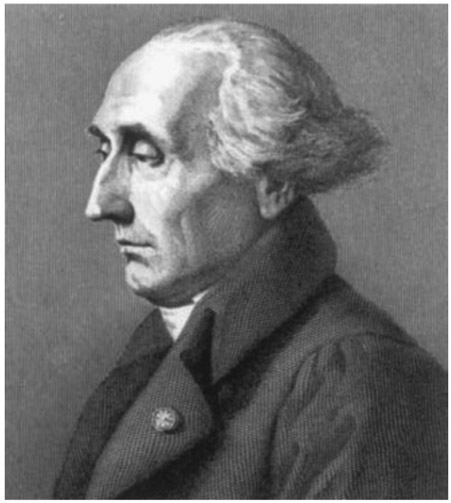

Joseph-Louis Lagrange: French/Italian (1736–1813)
It is not very well known that the famous French/Italian mathematician Joseph-Louis Lagrange was already fifty-one years old when he moved to France. Born as Giuseppe Luigi Lagrangia in Turin, Italy, he spent the first three decades of his life in Italy and the next twenty years in Germany, as Leonhard Euler’s successor at the Berlin Academy of Sciences. However, in 1787, he accepted an offer of Louis XVI to move to Paris and become a member of the French Academy of Sciences. He remained in Paris for the rest of his life and is mostly remembered as Joseph-Louis Lagrange, although in Italy he is known as Giuseppe Luigi Lagrange, changing his Italian first and middle names to the French version to match with his French last name (see fig. 27.1).
Yet his important role in the introduction of the metric system during the French Revolution, together with the fact that his magnum opus, Mécanique analytique, was first published in Paris (although written in Berlin), may also contribute to his being perceived and remembered as French—except in Italy, of course. Although it would be perfectly right to call him an Italian mathematician, his family has a branch in France as well. Lagrange’s paternal great-grandfather was a French army officer who had moved to Turin, which at that time was the capital of the Duchy of Savoy, to work for the Duke of Savoy. He married an Italian and the family stayed in Turin.
In 1720, Turin became the capital of the kingdom of Sardinia, and on January 25, 1736, Lagrange was born as the first of eleven children of

Figure 27.1. Memorial tablet in Turin.
Giuseppe Francesco Lodovico Lagrangia and his wife, Teresa. Only two of their children survived to adulthood. Lagrange’s father was treasurer of the Office of Public Works and Fortifications in Turin.1 Although his position would have been paid well enough to allow his family some degree of wealth, he unfortunately lost most of his money and most of his property with financial speculation. He wanted his eldest son to become a lawyer, and Lagrange accepted this wish without any hesitation. He studied at the University of Turin, where classical Latin would become his favorite subject. Initially he didn’t show any interest in mathematics and found the subject rather boring. However, his mind suddenly changed when he accidentally came across a paper on the use of algebra in optics, written by the English astronomer and mathematician Edmond Halley (1656–1742). Halley is famous for computing the periodicity of a comet he had observed in 1682. The comet was named after him upon its predicted return in 1758. With his interest in mathematics aroused by Halley’s memoir, Lagrange wanted to learn more and began to read mathematical texts on his own, including works by Maria Gaetana Agnesi and Leonhard Euler. His enthusiasm grew, and he threw himself into mathematics. After only one year of intense studying, he was an essentially self-taught but accomplished mathematician. In 1754, Lagrange published his first mathematical work, an analogy between the binomial theorem and the successive derivatives of the product of functions. This work, written in the form of a letter to the mathematician Giulio Fagnano (1682–1766), was not a masterpiece and showed that Lagrange was working alone, without the advice of a mathematical supervisor. Shortly after the publication of his paper, Lagrange discovered that the results were already contained in a published correspondence between Johann Bernoulli and Gottfried Wilhelm Leibniz. Lagrange was shocked by this discovery and feared that he would be accused of plagiarism. However, the bumpy start of his career as a mathematician actually increased his motivation, as he then wanted to prove as soon as possible that he was able to achieve his own significant results in mathematics. He began working on the tautochrone curve, “the curve for which the time taken by an object sliding without friction in uniform gravity to its lowest point is independent of its starting point.”2 The tautochrone problem had been solved by Christiaan Huygens 1659. Using geometry, he identified the curve to be an inverted cycloid, the curve traced by a point on the rim of a circular wheel as the wheel rolls along a straight line without slipping. Lagrange was able to provide a purely analytic solution to the tautochrone problem, which made his name known in the mathematical community. Moreover, he found a general method to find curves minimizing or maximizing certain quantities depending on the whole curve. For example, for each curve connecting a point A with a lower point B, one can calculate the time it would take an object sliding down from A to B along this curve in uniform gravity. Considering this time as a function of the curve, Lagrange’s analytic method allows one to derive a set of equations that must be satisfied by the “shortest time” curve between A and B. Beyond the fact that Lagrange was able to solve the tautochrone problem without any geometrical arguments, his method also provided a much more general framework to formulate and investigate similar problems. He sent his results to Euler, who was very impressed. Euler had been working on similar problems, using related ideas, but Lagrange’s approach considerably simplified and generalized Euler’s earlier analysis. This general framework is now called calculus of variations, and the equations defining the maximizing or minimizing curve are called the Euler-Lagrange equations. In 1755, Lagrange, who was still a teenager, was appointed professor of mathematics at the Royal Artillery School in Turin. Euler, who recognized Lagrange’s mathematical talent and originality, convinced the president of the Berlin Academy of Science to create a position for Lagrange in Berlin, to lure him away from Turin. However, Lagrange wanted to stay in Turin, even though the position in Berlin would have been much more prestigious. He politely refused the offer but was happy to be elected to a corresponding member of the Berlin Academy in 1756. Two years later, Lagrange was one of the founders of a scientific society in Turin, which would become the Royal Academy of Sciences of Turin. In the following years, he published most of his writings in the transactions of the Turin Academy, known as the Miscellanea Taurinensia. His works were influenced by and extended those of Isaac Newton, Daniel Bernoulli, and Euler. He applied his new mathematical methods to many problems in physics, such as the propagation of sound, fluid mechanics, and the calculation of the orbits of Jupiter and Saturn. In his Turin papers, Lagrange made seminal contributions to the theory of vibrating strings and introduced what is now known as the Lagrangian function of a physical system; the Lagrangian function, often referred to as “the Lagrangian,” is a central object in theoretical physics. In 1764, Lagrange was awarded the prize of the French Academy of Sciences for his work on the libration of the moon, which is a perceived oscillating motion of the face the moon presents to the Earth. On year later, another attempt, by Jean le Rond d’Alembert, to persuade Lagrange to leave Turin for a better position in Berlin failed. Lagrange’s response to the offer indicates that he did not want go to Berlin, because there he would always be the second-best mathematician after Euler, a role to which he did not aspire. However, in 1766, an exorbitant offer by Catherine the Great persuaded Euler to return to St. Petersburg, Russia, where he had already held a position from 1727 to 1741. With Euler out of Europe, Frederick II himself, king of Prussia, wrote to Lagrange that he wanted to have “the greatest mathematician in Europe” at his court. Finally, Lagrange accepted the invitation and succeeded Euler as director of Mathematics at the Berlin Academy of Science. Frederick II had some disagreements with Euler that may have facilitated Euler’s decision to go to St. Petersburg. After Lagrange’s appointment as the new director of Mathematics, he disrespectfully wrote to the French mathematician Jean le Rond d’Alembert that he had “replaced a one-eyed geometer by a two-eyed one.” In 1767, Lagrange married his cousin Vittoria Conti. He stayed in Berlin for twenty years, and Frederick II was indeed very pleased with his court mathematician. Lagrange produced a continuous flow of excellent papers covering the stability of the solar system, mechanics, dynamics, fluid mechanics, and probability. In a long series of papers extending over more than a decade, he basically created the theory of partial differential equations. The prize from the Paris Academy of Sciences was awarded to Lagrange on an almost-regular basis: He won the prize in 1766, for work on the libration of the moon; he shared the 1772 prize with Euler, for their work on the three-body problem;3 he won the prize in 1774, again for his work on the motion of the moon; and he won the 1780 prize, this time for his work on the planets’ perturbations of the orbits of comets.4 While applications in classical mechanics and astronomy still played a major role in his research at the Berlin Academy, he also worked on number theory, proving in 1770 that every positive integer is the sum of four squares. The years in Berlin were the most productive in Lagrange’s life: He was exempt from teaching and could devote all of his time to mathematics. It took some time until Italy realized Lagrange’s mathematical genius and acknowledged that his leaving Turin for Berlin was a tremendous loss for his hometown. Upon Lagrange’s visit in Paris in 1763, d’Alembert wrote “. . . in him Turin possesses a treasure whose worth it perhaps does not know.” Occasionally, efforts were made to get Lagrange back to Italy, but Lagrange turned down generous offers; he sought neither wealth nor power, and wanted only to have peace to do mathematics, without any other obligations. Around 1780, Lagrange started to write his magnum opus, the previously mentioned Mécanique analytique: a single, comprehensive treatise containing his and his contemporaries’ contributions to mechanics. Newton’s presentation of mechanics in his famous Philosophiæ Naturalis Principia Mathematica (commonly known as the Principia) was based on geometrical methods, and Lagrange’s intent was to transfer Newtonian mechanics and the art of solving problems in mechanics from a predominantly geometrical reasoning to a purely analytic and algebraic approach. His method was based on a set of general equations from which all the equations necessary for the solution of a particular problem can be derived. He wrote:
No diagrams will be found in this work. The methods that I explain require neither geometrical, nor mechanical, constructions or reasoning, but only algebraic operations in accordance with regular and uniform procedure. Those who love Analysis will see with pleasure that Mechanics has become a branch of it, and will be grateful to me for having thus extended its domain.
Lagrange not only summarized all of the work done in the field of mechanics since the time of Newton but also dramatically simplified the application of Newton’s theory via the use of differential equations, essentially condensing Newtonian mechanics into a single formula and eliminating any necessity for geometrical reasoning. However, Lagrange’s monumental work Mécanique analytique was not published until 1788. At that time, he had already left Germany. In 1783, after years of illness, his wife, Vittoria, died; Lagrange became very depressed. Three years later, he also lost his patron, Frederick II. As a result of these losses, Berlin had become a less welcoming place for him, and he lacked any reason to stay. Many states in Europe saw their chance to hire him; the best offer came from France and included a clause that exempted Lagrange from any teaching obligations. In 1787, at age fifty-one, Lagrange left Berlin and was appointed to a paid position at the French Academy of Sciences in Paris, where his Mécanique analytique was published in two volumes, in 1788 and 1789. However, neither the new environment nor the publication of his great work could cheer up Lagrange; he was still very melancholic, and the printed copy of his Mécanique lay on his desk, unopened, for more than two years.

Figure 27.2. Joseph-Louis Lagrange.
When Lagrange came to Paris, the French Revolution was just about to start. In 1790, Lagrange was made a member of the committee of the Academy of Sciences, to standardize weights and measures. The existing system of measures had become impractical for trade and needed to be replaced. As the revolution developed, politics changed rapidly and the situation of anyone considered part of the establishment became potentially dangerous. In dealing with these circumstances, Lagrange gradually overcame his depression. Although he had already prepared his escape from France, it turned out that he would never face real danger. All foreigners born in enemy countries, including members of the Academy of Sciences, were subject to arrest once the Reign of Terror began in 1793. Fortunately, the famed chemist Antoine Lavoisier (1743–1794) intervened on behalf of Lagrange, and he was granted an exception. In the political turmoil, no one could feel safe, as one could be declared an enemy of the regime overnight. The weights and measures commission was allowed to continue, but soon several prominent figures—such as Lavoisier himself, mathematician Pierre-Simon Laplace, and physicist Charles-Augustin de Coulomb (1736–1806)—were thrown off the commission, while Lagrange became its chairperson.5 In a trial that lasted less than a day, a revolutionary tribunal condemned to death Lavoisier and twenty-seven others. On the death of Lavoisier, who was guillotined on the afternoon of the day of his trial, Lagrange said:
It took only a moment to cause this head to fall and a hundred years will not suffice to produce its like.
After Lavoisier’s death, it was largely due to Lagrange’s influence that the final choice of the unit system of meter and kilogram was settled and the decimal subdivision was finally accepted by the commission. Lagrange spent his last years as professor at the École Polytechnique. In 1808, Napoleon Bonaparte named Lagrange to the Legion of Honor and Count of the Empire. In April 1813, Lagrange died; that same year, he was buried in the Panthéon in Paris. He is also “one of the seventy-two prominent French scientists who were commemorated on plaques at the first stage of the Eiffel Tower when it first opened” in 1889.6 Because many concepts and methods in both mathematics and physics bear his name, Lagrange is still well known. Among these are the Lagrangian function, Lagrangian mechanics, and the Euler-Lagrange equations, just to name a few.